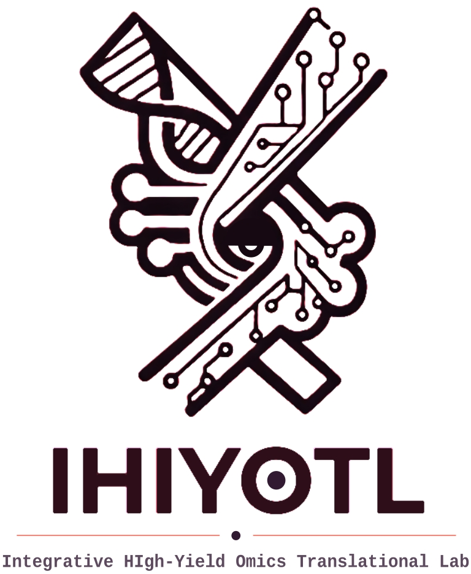
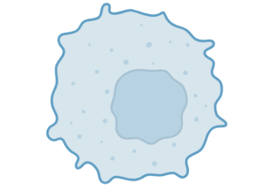
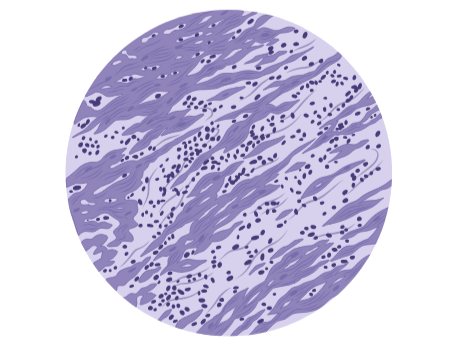

DNA
WGS, WES, paneles, microarreglos, entre otros, para observar variantes, CNV, firmas mutacionales, anotación y análisis funcional.

Consultoría especializada
Biología computacional | Bioinformática | Multi-ómica | Ciencia de Datos Biomédicos
Convertimos datos masivos en hipótesis biológicas: mecanismos, biomarcadores, estados celulares, reguladores, firmas moleculares, reposicionamiento farmacológico y narrativas listas para comunicar.
IHIYOTL no se limita al control de calidad y preprocesamiento de datos. Nos enfocamos en la pregunta biomédica: interpretar el sistema biológico, conectar los resultados con la hipótesis y producir evidencia comunicable para manuscritos, tesis, carteles, informes o decisiones de investigación.
Servicios
Trabajamos con datos crudos, matrices procesadas, metadatos clínicos o resultados preprocesados. Estos datos pueden provenir de cualquier tecnología y plataforma.
WGS, WES, paneles, microarreglos, entre otros, para observar variantes, CNV, firmas mutacionales, anotación y análisis funcional.
Metilación, ATAC-seq, DNase-seq, ChIP-seq, CUT&RUN/CUT&Tag, Hi-C, ChIA-PET, HiChIP, para observar DMPs/DMRs, anotación regulatoria, accesibilidad a cromatina, modificación de histonas y conformación tridimensional.
Bulk RNA-seq, microarreglos, RNA no codificante, long-read RNA-seq, epitranscriptómica, CLIP-seq, RIBO-seq, SLAM-seq, para observar expresión diferencial, isoformas, firmas moleculares, interacciones, estructuras y dinámica de RNA.

Célula únicascRNA-seq, snRNA-seq, scATAC-seq, CITE-seq, entre otras, para observar clustering, heterogeneidad, identidad celular, expresión diferencial, ontología génica, estado celular, entre otras características.

Ómica espacialVisium, Visium HD, Xenium, CosMx, MERSCOPE, entre otras, para observar clustering espacial, genes espacialmente variables, expresión diferencial por región, nichos, entre otros.
Análisis de bases de datos públicas y particulares, análisis de supervivencia, biomarcadores, estratificación molecular y ciencia de datos biomédicos.
Servicios
Combinamos herramientas en flujos personalizados para responder la pregunta de investigación. Sin limitarnos a estos, algunos de los enfoques incluyen:
Anotación curada y composición diferencial, trayectorias y pseudotiempo (Monocle3, Slingshot), ciclo celular y RNA velocity (scVelo), CNV (inferCNV, CopyKAT), scMetabolism, regulones específicos por tipo celular con pySCENIC, y comunicación célula-célula con CellChat, CellPhoneDB y NICHES.
Dominios espaciales (BayesSpace, STAGATE, SpaGCN), vecindarios tisulares (squidpy, Giotto), deconvolución con referencia single-cell (Cell2location, RCTD, CARD), genes espacialmente variables (SpatialDE, SPARK), comunicación célula-célula en contexto espacial (CellChat, NICHES, stLearn) e integración histológica con mapas de actividad de vías.
Firmas oncogénicas, metabolismo, hipoxia, EMT, senescencia, stemness, proliferación y estrés celular con GSEA, GSVA, ORA y Pathifier; infiltración inmune y composición celular con CIBERSORTx, xCell, EPIC, MCP-counter y quanTIseq; immunophenoscore para estimar potencial de respuesta a inmunoterapia.
Conexión de firmas transcripcionales con bases de perturbación (CMap/LINCS, DGIdb) para reposicionamiento de fármacos, integración de expresión, variantes, CNV, metilación, clínica y supervivencia en una narrativa biológica coherente, modelos de clustering, reducción de dimensionalidad, clasificación, firmas predictivas, validación con cohortes públicas.
Co-expresión, información mutua, correlación, módulos, hubs y preservación entre condiciones (WGCNA), actividad de factores de transcripción y regulones con DoRothEA/decoupleR, VIPER y SCENIC/pySCENIC, y análisis de redes regulatorias y blancos transcripcionales.
Reconstrucción de pseudofilogenias a partir de perfiles de variantes somáticas o germinales, inferencia de heterogeneidad y evolución clonal, curación con ClinVar, COSMIC, OncoKB y CIViC, predicción de impacto funcional (SIFT, PolyPhen, AlphaMissense) y anotación farmacogenómica para priorización clínica.
Entregables
Lectura biológica clara, hallazgos clave, limitaciones y próximos pasos.
Scripts en R/Python/Bash, bitácora y parámetros relevantes.
Material listo para manuscrito, tesis, cartel, seminario o informe institucional.
Explicación de resultados, discusión y apoyo para responder observaciones.
Flujo de trabajo
Objetivo, hipótesis, datos y restricciones.
Metadatos, calidad, formato y factibilidad.
Pipeline reproducible y módulos avanzados.
Mecanismos, figuras y narrativa biológica.
Reporte, código, tablas, soporte y cierre.
Respaldo científico
Somos un equipo multidisciplinario integrado por investigadores especializados de institutos como InCan, CINVESTAV, IMSS y RAI.
Doctor en Ciencias Biomédicas por la UNAM y Maestro en Ciencias Bioquímicas por la UNAM. Actualmente cuenta con más de 13 publicaciones científicas en revistas internacionales indizadas.
Experiencia en transcriptómica, genómica, metilómica, transcriptómica espacial, redes, deconvolución, integración clínico-molecular y generación de resultados publicables.
Contacto
Agenda una sesión de diagnóstico inicial sin costo para juntos evaluar el alcance de los datos y estructurar una ruta de análisis óptima.